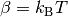
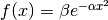
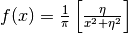

cmspy.common package¶
Submodules¶
cmspy.common.cli module¶
-
cmspy.common.cli.band_pair_arg(s)¶
-
cmspy.common.cli.band_range_arg(s)¶
-
cmspy.common.cli.extant_file(f)¶
-
cmspy.common.cli.extant_path(s)¶
-
cmspy.common.cli.group_namespace(namespace, parser)¶
-
cmspy.common.cli.mpl_style_arg(s)¶
-
cmspy.common.cli.nonnegative_int_arg(s)¶
-
cmspy.common.cli.positive_int_arg(s)¶
-
cmspy.common.cli.print_header(stream=<open file '<stdout>', mode 'w'>)¶
-
cmspy.common.cli.spin_arg(s)¶
cmspy.common.constants module¶
cmspy.common.ct module¶
-
class
cmspy.common.ct.ConvergenceTest(test_files, xvals, ref_file=None)¶ Bases:
object-
classmethod
from_kwargs(**kwargs)¶
-
classmethod
-
class
cmspy.common.ct.ScalarDatasetConvergenceTestPlotter(data, xvals, data_ref=None)¶ Bases:
object-
get_gnuplot_data_objs(**kwargs)¶
-
plot(**plot_args)¶
-
-
cmspy.common.ct.read_config(fname)¶
cmspy.common.fftutils module¶
-
class
cmspy.common.fftutils.FFTGrid(n1, n2, n3, basis=None)¶ Bases:
objectAn object representing a Fast Fourier Transform (FFT) grid
Parameters: n1: int
first FFT box dimension
n2: int
second FFT box dimension
n3: int
third FFT box dimension
basis: ndarray, shape (3,3), optional
the reciprocal lattice vectors
-
create_box_sphere_map(G_sphere)¶ Get the indices in the FFT box of a set of G-vectors
Parameters: G_sphere: ndarray, shape (ngvec, 3)
G-vectors in crystal coordinates
Returns: idx: ndarray, shape (ngvec,)
the indices, in the FFT box, of the G-vectors in G_sphere
Notes
G_box[idx[i]] = G_sphere[i] or G_box[idx] = G_sphere
-
static
get_acceptable_grid(lattice_vectors, ecut, kpoints=None, prime_factors=[2, 3, 5])¶ Parameters: kpoints: ndarray, shape (nkpts,3) or (3,), optional
k-points in crystal coordinates
-
get_gvectors_box(units='crystal')¶ Get the G-vectors in the FFT box
Parameters: units: {‘crystal’, ‘cartesian’}, optional
output units of the G-vectors
Returns: G: ndarray, shape (n1*n2*n3, 3)
-
get_gvectors_sphere(units='crystal', ecut=None, kpoint=None, sort=False)¶ Get the sphere of G-vectors from an FFT box
Parameters: units: {‘crystal’, ‘cartesian’}, optional
output units of the G-vectors
ecut: optional
plane wave cutoff in Rydberg
basis: ndarray, shape (3, 3), optional
the reciprocal lattice vectors, required if units=’cartesian’ or ecut is specified
Returns: G: ndarray, shape (ngvec,3)
ngvec depends on ecut, when ecut is not specified ngvec=n1*n2*n3
-
static
get_minimal_grid(lattice_vectors, ecut, kpoints=None, prime_factors=[2, 3, 5])¶ Parameters: kpoints : ndarray, shape (nkpts,3) or (3,), optional
k-points in crystal coordinates
ecut : float
energy cutoff in Rydberg
-
gvectors_box¶
-
gvectors_sphere¶
-
put_data_in_box(G_sphere, data_sphere)¶ Put data defined on a G-vector sphere into an FFT box
Parameters: G_sphere: ndarray, shape (ngvec, 3)
G-vectors in crystal coordinates
data_sphere: ndarray, shape (ngvec,)
the data
Returns: data_box: ndarray, shape (n1*n2*n3,)
-
shape¶
-
-
cmspy.common.fftutils.acceptable_prime_factors(prime_factors)¶
-
cmspy.common.fftutils.prime_sieve(limit)¶
-
cmspy.common.fftutils.primes_upto2(limit)¶
-
cmspy.common.fftutils.trial_division(n)¶ Return a list of the prime factors for a natural number.
cmspy.common.fns module¶
Common functions
-
cmspy.common.fns.dfdde(mu, beta)¶ Derivative of Fermi-Dirac distribution function
Parameters: mu : float
chemical potential
beta: float
temperature 
Returns: lambda
-
cmspy.common.fns.fd(mu, beta)¶ Fermi-Dirac distribution function :math:`f_{textrm{FD}}(E) = frac{1}{1*e^{beta}}
Parameters: mu : float
chemical potential
beta: float
temperature
Returns: lambda
-
cmspy.common.fns.gaussian(sigma)¶ Gaussian function 
Parameters: sigma : float Returns: lambda
-
cmspy.common.fns.lorentzian(eta)¶ Lorentzian function 
Parameters: eta : float Returns: lambda
cmspy.common.regex module¶
Common regular expressions
-
cmspy.common.regex.regex_bool= <_sre.SRE_Pattern object>¶ boolean
-
cmspy.common.regex.regex_bool_fortran= <_sre.SRE_Pattern object>¶ Fortran logical
-
cmspy.common.regex.regex_float= <_sre.SRE_Pattern object>¶ floats
-
cmspy.common.regex.regex_float_exp= <_sre.SRE_Pattern object>¶ floats with exponent
-
cmspy.common.regex.regex_float_exp_fortran= <_sre.SRE_Pattern object>¶ floats with exponent
-
cmspy.common.regex.regex_int= <_sre.SRE_Pattern object>¶ integers
-
cmspy.common.regex.regex_tuple3= <_sre.SRE_Pattern object at 0x1649070>¶ 3-tuple